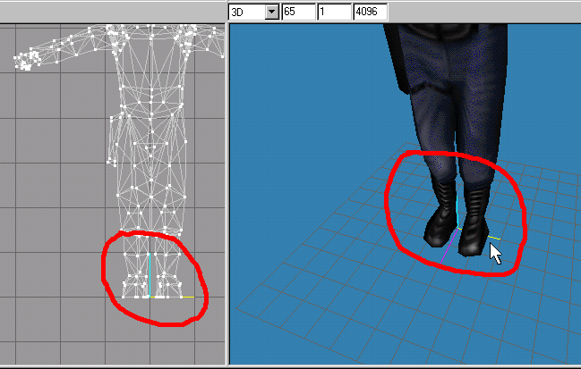
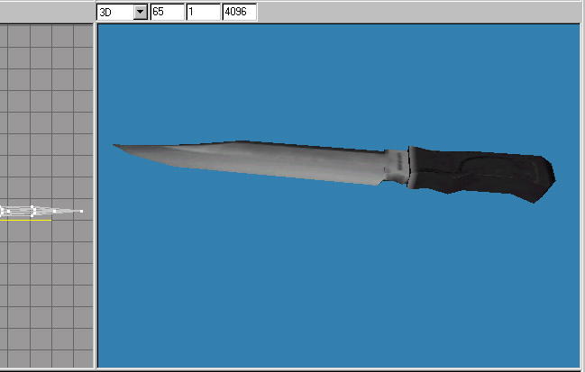

|
|
The box can be deleted from the "Groups" rollout, as it has served its purpose. Save your file at this point. Another thing to note is that you will have to move it to match the axis bottom as this is the point that model use for his feet placement. Look at our favorite character in HL Barney and notice his position in the "Front" and the "3D" viewports in Figure 1.51 for an example of this.

Figure 1.51 Example of proper placement of a model
You will now need to rotate this knife so that your looking at in the "Front" viewport laying on its side with the knife edge facing you. This is how it will be viewed in the HL world. Look at Figure 1.52 for the final position of the knife.

Figure 1.52 Final position of the knife
Lets look at this beauty one more time. You will notice in Figure 1.52 that I have adjust the width of the knife to make it look a bit more realistic, by moving vetices in nudges. I set the "Move" tools "X" axis to ".03" in the move axis text box and clicked on the "Move" button in the "Move Options."
You may have noticed some of the faces not showing up at this point. You should right click on the "3D" viewport and uncheck the Draw Backfaces option of the viewport window. This is a toggle, so you can turn it on and off by right clicking and choosing it again. Spin the model around and look carefully to see if any "faces" have their faces flipped. If this is the case you will have to select on the faces that appear as they are not showing, or have their "faces" flipped. To correct this you must select "Face->Reverse Vertex Order" in the menu selections.
To get it compiled as a HL world model we will have to add a joint for our knife.Click on the "Joints" tab rollout and check the "Show Skeleton" check box so there is a check mark in it to show the joint that we will create. Click on the "Model" tab rollout to switch back to create the actual "joint."

Figure 1.53 Creating a joint for the knife
The final thing we need to do to our model, is to assign all the vertices to this "joint" that we just have created. If you have lots of joints, you would first go to the "Joints" rollout and select the proper joint that you want to assign vertices to. In this case our "joint" is presently selected and we want to assign all the vertices to this "joint." Select "Edit->Select All" on the menu selections.
Switch to the "Joints" rollout and click on the "Assign" button to assign all vertices to this joint as Figure 1.54 depicts.

Figure 1.54 Assigning a joint to the vertices
Our model is now ready to be exported to be used in the compilation of a Half-Life world model. Select "File->Export->Half-Life SMD..." and in the "Save As" dialog box "File name" text box, type "knife2(ref)" for our smd file. Click the "Save" button. You will have a new dialog box appear with 2 choices, "Reference," and "Sequence." We will choose "Reference" as we do not have any animations that require the saving of "Sequence" frames. We can reuse this "Reference" smd file to fake an "Sequence" or animation frame. This is quite acceptable in a world model. We will discuss animation creation in a later tutorial. Look at Figure 1.55 to see an example of choosing a "Reference" smd file.

Figure 1.55 Saving a Reference smd file
Sometimes errors will occur at this stage, as you may not have all the "vertices" assigned to a "joint." this is easily corrected in our world model case as all the "vertices" will only be assigned to one "joint." You might think that you have assigned all the "vertices" to the "joint," but in reality you may have not have had them all selected in the step where we choose all in the window. You may have inadvertently have had some "faces" or "vertices" hidden from view when you used the "Edit->Select All" operation. To fix this you would click the"Edit->Unhide All" in the menu selections. Then you would use the "Joints" rollout and click on the only "joint" in the list and then use the "Edit->Select All" on the menu selections. Finally, you once again click on the "Assign" button to assign all vertices to this joint as Figure 1.54 gives an example of doing this.
|
|